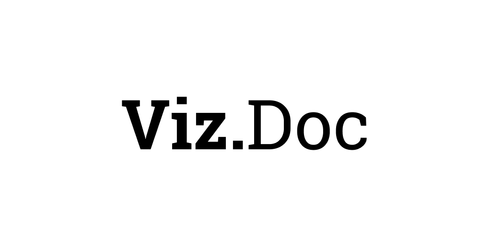

Viz.Doc - документация VIZ¶
Разделы:
- Что такое VIZ?
- Экономика
- Делегаты
- Голосование за делегатов
- Управление параметрами сети
- Подробное описание голосуемых параметров
- account_creation_fee
- create_account_delegation_ratio
- create_account_delegation_time
- maximum_block_size
- min_delegation
- min_curation_percent [устарел]
- max_curation_percent [устарел]
- bandwidth_reserve_below
- bandwidth_reserve_percent
- flag_energy_additional_cost[устарел]
- vote_accounting_min_rshares
- committee_request_approve_min_percent
- inflation_witness_percent
- inflation_ratio_committee_vs_reward_fund
- inflation_recalc_period
- Пропускная способность
- Словарь
- Контакты